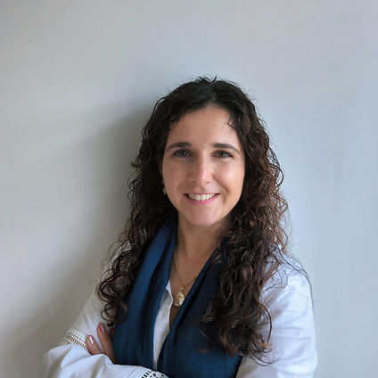
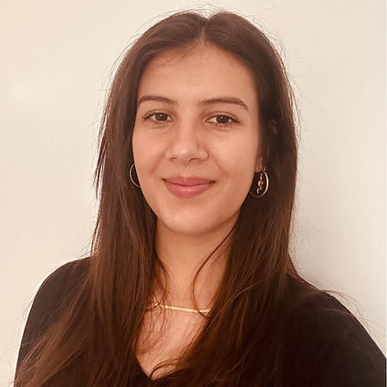

Alexandra Carneiro
- Prática Clínica em Avaliação e Consulta Psicológica com crianças, jovens e adultos.
- Doutorada em Psicologia Aplicada pela Escola de Psicologia da Universidade do Minho, Campus de Gualtar.
- Licenciada e Mestre em Psicologia - Especialização em Psicologia Clínica e da Saúde, pela Faculdade de Educação e Psicologia da Universidade Católica Portuguesa, Centro Regional do Porto.
- Especialista em Psicologia Clínica e da Saúde pela Ordem dos Psicólogos Portugueses (Cédula Profissional 9934).
- Membro internacional da APA.
- Professora Auxiliar Convidada na Faculdade de Educação e Psicologia da Universidade Católica Portuguesa, Centro Regional do Porto.

Raquel Duarte
- Prática Clínica em Avaliação e Consulta Psicológica com crianças, jovens e adultos.
- Doutorada em Psicologia Aplicada pela Escola de Psicologia da Universidade do Minho, Campus de Gualtar.
- Licenciada e Mestre em Psicologia - Especialização em Psicologia Clínica e da Saúde, pela Faculdade de Educação e Psicologia da Universidade Católica Portuguesa, Centro Regional do Porto.
- Especialista em Psicologia Clínica e da Saúde pela Ordem dos Psicólogos Portugueses (Cédula Profissional 9934).
- Membro internacional da APA.
- Professora Auxiliar Convidada na Faculdade de Educação e Psicologia da Universidade Católica Portuguesa, Centro Regional do Porto.